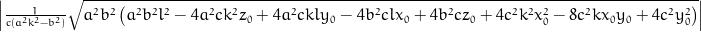

Assumed to be centred at 0, the coordinate system origin.
0=
Parametric solution (t). Solutions were derived automatically using sympy.
Points in cartesian coordinates (x, y, z)

x = x0 + (-1.0L/2.0L*pow(a, 2)*pow(b, 2)*l - pow(a, 2)*c*k*y0 + pow(b, 2)*c*x0 - 1.0L/2.0L*sqrt(pow(a, 2)*pow(b, 2)*(pow(a, 2)*pow(b, 2)*pow(l, 2) - 4*pow(a, 2)*c*pow(k, 2)*z0 + 4*pow(a, 2)*c*k*l*y0 - 4*pow(b, 2)*c*l*x0 + 4*pow(b, 2)*c*z0 + 4*pow(c, 2)*pow(k, 2)*pow(x0, 2) - 8*pow(c, 2)*k*x0*y0 + 4*pow(c, 2)*pow(y0, 2))))/(c*(pow(a, 2)*pow(k, 2) - pow(b, 2)));
y = y0 + k*(-1.0L/2.0L*pow(a, 2)*pow(b, 2)*l - pow(a, 2)*c*k*y0 + pow(b, 2)*c*x0 - 1.0L/2.0L*sqrt(pow(a, 2)*pow(b, 2)*(pow(a, 2)*pow(b, 2)*pow(l, 2) - 4*pow(a, 2)*c*pow(k, 2)*z0 + 4*pow(a, 2)*c*k*l*y0 - 4*pow(b, 2)*c*l*x0 + 4*pow(b, 2)*c*z0 + 4*pow(c, 2)*pow(k, 2)*pow(x0, 2) - 8*pow(c, 2)*k*x0*y0 + 4*pow(c, 2)*pow(y0, 2))))/(c*(pow(a, 2)*pow(k, 2) - pow(b, 2)));
z = z0 + l*(-1.0L/2.0L*pow(a, 2)*pow(b, 2)*l - pow(a, 2)*c*k*y0 + pow(b, 2)*c*x0 - 1.0L/2.0L*sqrt(pow(a, 2)*pow(b, 2)*(pow(a, 2)*pow(b, 2)*pow(l, 2) - 4*pow(a, 2)*c*pow(k, 2)*z0 + 4*pow(a, 2)*c*k*l*y0 - 4*pow(b, 2)*c*l*x0 + 4*pow(b, 2)*c*z0 + 4*pow(c, 2)*pow(k, 2)*pow(x0, 2) - 8*pow(c, 2)*k*x0*y0 + 4*pow(c, 2)*pow(y0, 2))))/(c*(pow(a, 2)*pow(k, 2) - pow(b, 2)));
x = x0 + (-1.0L/2.0L*pow(a, 2)*pow(b, 2)*l - pow(a, 2)*c*k*y0 + pow(b, 2)*c*x0 + (1.0L/2.0L)*sqrt(pow(a, 2)*pow(b, 2)*(pow(a, 2)*pow(b, 2)*pow(l, 2) - 4*pow(a, 2)*c*pow(k, 2)*z0 + 4*pow(a, 2)*c*k*l*y0 - 4*pow(b, 2)*c*l*x0 + 4*pow(b, 2)*c*z0 + 4*pow(c, 2)*pow(k, 2)*pow(x0, 2) - 8*pow(c, 2)*k*x0*y0 + 4*pow(c, 2)*pow(y0, 2))))/(c*(pow(a, 2)*pow(k, 2) - pow(b, 2)));
y = y0 + k*(-1.0L/2.0L*pow(a, 2)*pow(b, 2)*l - pow(a, 2)*c*k*y0 + pow(b, 2)*c*x0 + (1.0L/2.0L)*sqrt(pow(a, 2)*pow(b, 2)*(pow(a, 2)*pow(b, 2)*pow(l, 2) - 4*pow(a, 2)*c*pow(k, 2)*z0 + 4*pow(a, 2)*c*k*l*y0 - 4*pow(b, 2)*c*l*x0 + 4*pow(b, 2)*c*z0 + 4*pow(c, 2)*pow(k, 2)*pow(x0, 2) - 8*pow(c, 2)*k*x0*y0 + 4*pow(c, 2)*pow(y0, 2))))/(c*(pow(a, 2)*pow(k, 2) - pow(b, 2)));
z = z0 + l*(-1.0L/2.0L*pow(a, 2)*pow(b, 2)*l - pow(a, 2)*c*k*y0 + pow(b, 2)*c*x0 + (1.0L/2.0L)*sqrt(pow(a, 2)*pow(b, 2)*(pow(a, 2)*pow(b, 2)*pow(l, 2) - 4*pow(a, 2)*c*pow(k, 2)*z0 + 4*pow(a, 2)*c*k*l*y0 - 4*pow(b, 2)*c*l*x0 + 4*pow(b, 2)*c*z0 + 4*pow(c, 2)*pow(k, 2)*pow(x0, 2) - 8*pow(c, 2)*k*x0*y0 + 4*pow(c, 2)*pow(y0, 2))))/(c*(pow(a, 2)*pow(k, 2) - pow(b, 2)));
Distance between crossing points.
sol1 = (-1.0L/2.0L*pow(a, 2)*pow(b, 2)*l - pow(a, 2)*c*k*y0 + pow(b, 2)*c*x0 - 1.0L/2.0L*sqrt(pow(a, 2)*pow(b, 2)*(pow(a, 2)*pow(b, 2)*pow(l, 2) - 4*pow(a, 2)*c*pow(k, 2)*z0 + 4*pow(a, 2)*c*k*l*y0 - 4*pow(b, 2)*c*l*x0 + 4*pow(b, 2)*c*z0 + 4*pow(c, 2)*pow(k, 2)*pow(x0, 2) - 8*pow(c, 2)*k*x0*y0 + 4*pow(c, 2)*pow(y0, 2))))/(c*(pow(a, 2)*pow(k, 2) - pow(b, 2)));
sol2 = (-1.0L/2.0L*pow(a, 2)*pow(b, 2)*l - pow(a, 2)*c*k*y0 + pow(b, 2)*c*x0 + (1.0L/2.0L)*sqrt(pow(a, 2)*pow(b, 2)*(pow(a, 2)*pow(b, 2)*pow(l, 2) - 4*pow(a, 2)*c*pow(k, 2)*z0 + 4*pow(a, 2)*c*k*l*y0 - 4*pow(b, 2)*c*l*x0 + 4*pow(b, 2)*c*z0 + 4*pow(c, 2)*pow(k, 2)*pow(x0, 2) - 8*pow(c, 2)*k*x0*y0 + 4*pow(c, 2)*pow(y0, 2))))/(c*(pow(a, 2)*pow(k, 2) - pow(b, 2)));
distance = fabs(sqrt(pow(a, 2)*pow(b, 2)*(pow(a, 2)*pow(b, 2)*pow(l, 2) - 4*pow(a, 2)*c*pow(k, 2)*z0 + 4*pow(a, 2)*c*k*l*y0 - 4*pow(b, 2)*c*l*x0 + 4*pow(b, 2)*c*z0 + 4*pow(c, 2)*pow(k, 2)*pow(x0, 2) - 8*pow(c, 2)*k*x0*y0 + 4*pow(c, 2)*pow(y0, 2)))/(c*(pow(a, 2)*pow(k, 2) - pow(b, 2))));


Assumed to be centred at 0, the coordinate system origin.
0=Parametric solution (t). Solutions were derived automatically using sympy.
![\frac{1}{c \left(a^{2} \sin^{2}{\left (\phi \right )} - b^{2} \cos^{2}{\left (\phi \right )}\right) \sin^{2}{\left (\theta \right )}} \left(- \frac{a^{2} b^{2}}{2} \cos{\left (\theta \right )} - a^{2} c y_{0} \sin{\left (\phi \right )} \sin{\left (\theta \right )} + b^{2} c x_{0} \sin{\left (\theta \right )} \cos{\left (\phi \right )} - \frac{1}{2} \sqrt{a^{2} b^{2} \left(a^{2} b^{2} \cos^{2}{\left (\theta \right )} + a^{2} c y_{0} \left(\cos{\left (\phi - 2 \theta \right )} - \cos{\left (\phi + 2 \theta \right )}\right) - 4 a^{2} c z_{0} \sin^{2}{\left (\phi \right )} \sin^{2}{\left (\theta \right )} - b^{2} c x_{0} \left(- \sin{\left (\phi - 2 \theta \right )} + \sin{\left (\phi + 2 \theta \right )}\right) + 4 b^{2} c z_{0} \sin^{2}{\left (\theta \right )} \cos^{2}{\left (\phi \right )} + 4 c^{2} x_{0}^{2} \sin^{2}{\left (\phi \right )} \sin^{2}{\left (\theta \right )} - 8 c^{2} x_{0} y_{0} \sin{\left (\phi \right )} \sin^{2}{\left (\theta \right )} \cos{\left (\phi \right )} + 4 c^{2} y_{0}^{2} \sin^{2}{\left (\theta \right )} \cos^{2}{\left (\phi \right )}\right)}\right)](eq58.png)
![\frac{1}{c \left(a^{2} \sin^{2}{\left (\phi \right )} - b^{2} \cos^{2}{\left (\phi \right )}\right) \sin^{2}{\left (\theta \right )}} \left(- \frac{a^{2} b^{2}}{2} \cos{\left (\theta \right )} - a^{2} c y_{0} \sin{\left (\phi \right )} \sin{\left (\theta \right )} + b^{2} c x_{0} \sin{\left (\theta \right )} \cos{\left (\phi \right )} + \frac{1}{2} \sqrt{a^{2} b^{2} \left(a^{2} b^{2} \cos^{2}{\left (\theta \right )} + a^{2} c y_{0} \left(\cos{\left (\phi - 2 \theta \right )} - \cos{\left (\phi + 2 \theta \right )}\right) - 4 a^{2} c z_{0} \sin^{2}{\left (\phi \right )} \sin^{2}{\left (\theta \right )} - b^{2} c x_{0} \left(- \sin{\left (\phi - 2 \theta \right )} + \sin{\left (\phi + 2 \theta \right )}\right) + 4 b^{2} c z_{0} \sin^{2}{\left (\theta \right )} \cos^{2}{\left (\phi \right )} + 4 c^{2} x_{0}^{2} \sin^{2}{\left (\phi \right )} \sin^{2}{\left (\theta \right )} - 8 c^{2} x_{0} y_{0} \sin{\left (\phi \right )} \sin^{2}{\left (\theta \right )} \cos{\left (\phi \right )} + 4 c^{2} y_{0}^{2} \sin^{2}{\left (\theta \right )} \cos^{2}{\left (\phi \right )}\right)}\right)](eq59.png)
Points in cartesian coordinates (x, y, z)
![x_{0} + \frac{\cos{\left (\phi \right )}}{c \left(a^{2} \sin^{2}{\left (\phi \right )} - b^{2} \cos^{2}{\left (\phi \right )}\right) \sin{\left (\theta \right )}} \left(- \frac{a^{2} b^{2}}{2} \cos{\left (\theta \right )} - a^{2} c y_{0} \sin{\left (\phi \right )} \sin{\left (\theta \right )} + b^{2} c x_{0} \sin{\left (\theta \right )} \cos{\left (\phi \right )} - \frac{1}{2} \sqrt{a^{2} b^{2} \left(a^{2} b^{2} \cos^{2}{\left (\theta \right )} + a^{2} c y_{0} \left(\cos{\left (\phi - 2 \theta \right )} - \cos{\left (\phi + 2 \theta \right )}\right) - 4 a^{2} c z_{0} \sin^{2}{\left (\phi \right )} \sin^{2}{\left (\theta \right )} - b^{2} c x_{0} \left(- \sin{\left (\phi - 2 \theta \right )} + \sin{\left (\phi + 2 \theta \right )}\right) + 4 b^{2} c z_{0} \sin^{2}{\left (\theta \right )} \cos^{2}{\left (\phi \right )} + 4 c^{2} x_{0}^{2} \sin^{2}{\left (\phi \right )} \sin^{2}{\left (\theta \right )} - 8 c^{2} x_{0} y_{0} \sin{\left (\phi \right )} \sin^{2}{\left (\theta \right )} \cos{\left (\phi \right )} + 4 c^{2} y_{0}^{2} \sin^{2}{\left (\theta \right )} \cos^{2}{\left (\phi \right )}\right)}\right)](eq60.png)
![y_{0} + \frac{\sin{\left (\phi \right )}}{c \left(a^{2} \sin^{2}{\left (\phi \right )} - b^{2} \cos^{2}{\left (\phi \right )}\right) \sin{\left (\theta \right )}} \left(- \frac{a^{2} b^{2}}{2} \cos{\left (\theta \right )} - a^{2} c y_{0} \sin{\left (\phi \right )} \sin{\left (\theta \right )} + b^{2} c x_{0} \sin{\left (\theta \right )} \cos{\left (\phi \right )} - \frac{1}{2} \sqrt{a^{2} b^{2} \left(a^{2} b^{2} \cos^{2}{\left (\theta \right )} + a^{2} c y_{0} \left(\cos{\left (\phi - 2 \theta \right )} - \cos{\left (\phi + 2 \theta \right )}\right) - 4 a^{2} c z_{0} \sin^{2}{\left (\phi \right )} \sin^{2}{\left (\theta \right )} - b^{2} c x_{0} \left(- \sin{\left (\phi - 2 \theta \right )} + \sin{\left (\phi + 2 \theta \right )}\right) + 4 b^{2} c z_{0} \sin^{2}{\left (\theta \right )} \cos^{2}{\left (\phi \right )} + 4 c^{2} x_{0}^{2} \sin^{2}{\left (\phi \right )} \sin^{2}{\left (\theta \right )} - 8 c^{2} x_{0} y_{0} \sin{\left (\phi \right )} \sin^{2}{\left (\theta \right )} \cos{\left (\phi \right )} + 4 c^{2} y_{0}^{2} \sin^{2}{\left (\theta \right )} \cos^{2}{\left (\phi \right )}\right)}\right)](eq61.png)
![z_{0} + \frac{\cos{\left (\theta \right )}}{c \left(a^{2} \sin^{2}{\left (\phi \right )} - b^{2} \cos^{2}{\left (\phi \right )}\right) \sin^{2}{\left (\theta \right )}} \left(- \frac{a^{2} b^{2}}{2} \cos{\left (\theta \right )} - a^{2} c y_{0} \sin{\left (\phi \right )} \sin{\left (\theta \right )} + b^{2} c x_{0} \sin{\left (\theta \right )} \cos{\left (\phi \right )} - \frac{1}{2} \sqrt{a^{2} b^{2} \left(a^{2} b^{2} \cos^{2}{\left (\theta \right )} + a^{2} c y_{0} \left(\cos{\left (\phi - 2 \theta \right )} - \cos{\left (\phi + 2 \theta \right )}\right) - 4 a^{2} c z_{0} \sin^{2}{\left (\phi \right )} \sin^{2}{\left (\theta \right )} - b^{2} c x_{0} \left(- \sin{\left (\phi - 2 \theta \right )} + \sin{\left (\phi + 2 \theta \right )}\right) + 4 b^{2} c z_{0} \sin^{2}{\left (\theta \right )} \cos^{2}{\left (\phi \right )} + 4 c^{2} x_{0}^{2} \sin^{2}{\left (\phi \right )} \sin^{2}{\left (\theta \right )} - 8 c^{2} x_{0} y_{0} \sin{\left (\phi \right )} \sin^{2}{\left (\theta \right )} \cos{\left (\phi \right )} + 4 c^{2} y_{0}^{2} \sin^{2}{\left (\theta \right )} \cos^{2}{\left (\phi \right )}\right)}\right)](eq62.png)
![x_{0} + \frac{\cos{\left (\phi \right )}}{c \left(a^{2} \sin^{2}{\left (\phi \right )} - b^{2} \cos^{2}{\left (\phi \right )}\right) \sin{\left (\theta \right )}} \left(- \frac{a^{2} b^{2}}{2} \cos{\left (\theta \right )} - a^{2} c y_{0} \sin{\left (\phi \right )} \sin{\left (\theta \right )} + b^{2} c x_{0} \sin{\left (\theta \right )} \cos{\left (\phi \right )} + \frac{1}{2} \sqrt{a^{2} b^{2} \left(a^{2} b^{2} \cos^{2}{\left (\theta \right )} + a^{2} c y_{0} \left(\cos{\left (\phi - 2 \theta \right )} - \cos{\left (\phi + 2 \theta \right )}\right) - 4 a^{2} c z_{0} \sin^{2}{\left (\phi \right )} \sin^{2}{\left (\theta \right )} - b^{2} c x_{0} \left(- \sin{\left (\phi - 2 \theta \right )} + \sin{\left (\phi + 2 \theta \right )}\right) + 4 b^{2} c z_{0} \sin^{2}{\left (\theta \right )} \cos^{2}{\left (\phi \right )} + 4 c^{2} x_{0}^{2} \sin^{2}{\left (\phi \right )} \sin^{2}{\left (\theta \right )} - 8 c^{2} x_{0} y_{0} \sin{\left (\phi \right )} \sin^{2}{\left (\theta \right )} \cos{\left (\phi \right )} + 4 c^{2} y_{0}^{2} \sin^{2}{\left (\theta \right )} \cos^{2}{\left (\phi \right )}\right)}\right)](eq63.png)
![y_{0} + \frac{\sin{\left (\phi \right )}}{c \left(a^{2} \sin^{2}{\left (\phi \right )} - b^{2} \cos^{2}{\left (\phi \right )}\right) \sin{\left (\theta \right )}} \left(- \frac{a^{2} b^{2}}{2} \cos{\left (\theta \right )} - a^{2} c y_{0} \sin{\left (\phi \right )} \sin{\left (\theta \right )} + b^{2} c x_{0} \sin{\left (\theta \right )} \cos{\left (\phi \right )} + \frac{1}{2} \sqrt{a^{2} b^{2} \left(a^{2} b^{2} \cos^{2}{\left (\theta \right )} + a^{2} c y_{0} \left(\cos{\left (\phi - 2 \theta \right )} - \cos{\left (\phi + 2 \theta \right )}\right) - 4 a^{2} c z_{0} \sin^{2}{\left (\phi \right )} \sin^{2}{\left (\theta \right )} - b^{2} c x_{0} \left(- \sin{\left (\phi - 2 \theta \right )} + \sin{\left (\phi + 2 \theta \right )}\right) + 4 b^{2} c z_{0} \sin^{2}{\left (\theta \right )} \cos^{2}{\left (\phi \right )} + 4 c^{2} x_{0}^{2} \sin^{2}{\left (\phi \right )} \sin^{2}{\left (\theta \right )} - 8 c^{2} x_{0} y_{0} \sin{\left (\phi \right )} \sin^{2}{\left (\theta \right )} \cos{\left (\phi \right )} + 4 c^{2} y_{0}^{2} \sin^{2}{\left (\theta \right )} \cos^{2}{\left (\phi \right )}\right)}\right)](eq64.png)
![z_{0} + \frac{\cos{\left (\theta \right )}}{c \left(a^{2} \sin^{2}{\left (\phi \right )} - b^{2} \cos^{2}{\left (\phi \right )}\right) \sin^{2}{\left (\theta \right )}} \left(- \frac{a^{2} b^{2}}{2} \cos{\left (\theta \right )} - a^{2} c y_{0} \sin{\left (\phi \right )} \sin{\left (\theta \right )} + b^{2} c x_{0} \sin{\left (\theta \right )} \cos{\left (\phi \right )} + \frac{1}{2} \sqrt{a^{2} b^{2} \left(a^{2} b^{2} \cos^{2}{\left (\theta \right )} + a^{2} c y_{0} \left(\cos{\left (\phi - 2 \theta \right )} - \cos{\left (\phi + 2 \theta \right )}\right) - 4 a^{2} c z_{0} \sin^{2}{\left (\phi \right )} \sin^{2}{\left (\theta \right )} - b^{2} c x_{0} \left(- \sin{\left (\phi - 2 \theta \right )} + \sin{\left (\phi + 2 \theta \right )}\right) + 4 b^{2} c z_{0} \sin^{2}{\left (\theta \right )} \cos^{2}{\left (\phi \right )} + 4 c^{2} x_{0}^{2} \sin^{2}{\left (\phi \right )} \sin^{2}{\left (\theta \right )} - 8 c^{2} x_{0} y_{0} \sin{\left (\phi \right )} \sin^{2}{\left (\theta \right )} \cos{\left (\phi \right )} + 4 c^{2} y_{0}^{2} \sin^{2}{\left (\theta \right )} \cos^{2}{\left (\phi \right )}\right)}\right)](eq65.png)
x = x0 + (-1.0L/2.0L*pow(a, 2)*pow(b, 2)*cos(theta) - pow(a, 2)*c*y0*sin(phi)*sin(theta) + pow(b, 2)*c*x0*sin(theta)*cos(phi) - 1.0L/2.0L*sqrt(pow(a, 2)*pow(b, 2)*(pow(a, 2)*pow(b, 2)*pow(cos(theta), 2) + pow(a, 2)*c*y0*(cos(phi - 2*theta) - cos(phi + 2*theta)) - 4*pow(a, 2)*c*z0*pow(sin(phi), 2)*pow(sin(theta), 2) - pow(b, 2)*c*x0*(-sin(phi - 2*theta) + sin(phi + 2*theta)) + 4*pow(b, 2)*c*z0*pow(sin(theta), 2)*pow(cos(phi), 2) + 4*pow(c, 2)*pow(x0, 2)*pow(sin(phi), 2)*pow(sin(theta), 2) - 8*pow(c, 2)*x0*y0*sin(phi)*pow(sin(theta), 2)*cos(phi) + 4*pow(c, 2)*pow(y0, 2)*pow(sin(theta), 2)*pow(cos(phi), 2))))*cos(phi)/(c*(pow(a, 2)*pow(sin(phi), 2) - pow(b, 2)*pow(cos(phi), 2))*sin(theta));
y = y0 + (-1.0L/2.0L*pow(a, 2)*pow(b, 2)*cos(theta) - pow(a, 2)*c*y0*sin(phi)*sin(theta) + pow(b, 2)*c*x0*sin(theta)*cos(phi) - 1.0L/2.0L*sqrt(pow(a, 2)*pow(b, 2)*(pow(a, 2)*pow(b, 2)*pow(cos(theta), 2) + pow(a, 2)*c*y0*(cos(phi - 2*theta) - cos(phi + 2*theta)) - 4*pow(a, 2)*c*z0*pow(sin(phi), 2)*pow(sin(theta), 2) - pow(b, 2)*c*x0*(-sin(phi - 2*theta) + sin(phi + 2*theta)) + 4*pow(b, 2)*c*z0*pow(sin(theta), 2)*pow(cos(phi), 2) + 4*pow(c, 2)*pow(x0, 2)*pow(sin(phi), 2)*pow(sin(theta), 2) - 8*pow(c, 2)*x0*y0*sin(phi)*pow(sin(theta), 2)*cos(phi) + 4*pow(c, 2)*pow(y0, 2)*pow(sin(theta), 2)*pow(cos(phi), 2))))*sin(phi)/(c*(pow(a, 2)*pow(sin(phi), 2) - pow(b, 2)*pow(cos(phi), 2))*sin(theta));
z = z0 + (-1.0L/2.0L*pow(a, 2)*pow(b, 2)*cos(theta) - pow(a, 2)*c*y0*sin(phi)*sin(theta) + pow(b, 2)*c*x0*sin(theta)*cos(phi) - 1.0L/2.0L*sqrt(pow(a, 2)*pow(b, 2)*(pow(a, 2)*pow(b, 2)*pow(cos(theta), 2) + pow(a, 2)*c*y0*(cos(phi - 2*theta) - cos(phi + 2*theta)) - 4*pow(a, 2)*c*z0*pow(sin(phi), 2)*pow(sin(theta), 2) - pow(b, 2)*c*x0*(-sin(phi - 2*theta) + sin(phi + 2*theta)) + 4*pow(b, 2)*c*z0*pow(sin(theta), 2)*pow(cos(phi), 2) + 4*pow(c, 2)*pow(x0, 2)*pow(sin(phi), 2)*pow(sin(theta), 2) - 8*pow(c, 2)*x0*y0*sin(phi)*pow(sin(theta), 2)*cos(phi) + 4*pow(c, 2)*pow(y0, 2)*pow(sin(theta), 2)*pow(cos(phi), 2))))*cos(theta)/(c*(pow(a, 2)*pow(sin(phi), 2) - pow(b, 2)*pow(cos(phi), 2))*pow(sin(theta), 2));
x = x0 + (-1.0L/2.0L*pow(a, 2)*pow(b, 2)*cos(theta) - pow(a, 2)*c*y0*sin(phi)*sin(theta) + pow(b, 2)*c*x0*sin(theta)*cos(phi) + (1.0L/2.0L)*sqrt(pow(a, 2)*pow(b, 2)*(pow(a, 2)*pow(b, 2)*pow(cos(theta), 2) + pow(a, 2)*c*y0*(cos(phi - 2*theta) - cos(phi + 2*theta)) - 4*pow(a, 2)*c*z0*pow(sin(phi), 2)*pow(sin(theta), 2) - pow(b, 2)*c*x0*(-sin(phi - 2*theta) + sin(phi + 2*theta)) + 4*pow(b, 2)*c*z0*pow(sin(theta), 2)*pow(cos(phi), 2) + 4*pow(c, 2)*pow(x0, 2)*pow(sin(phi), 2)*pow(sin(theta), 2) - 8*pow(c, 2)*x0*y0*sin(phi)*pow(sin(theta), 2)*cos(phi) + 4*pow(c, 2)*pow(y0, 2)*pow(sin(theta), 2)*pow(cos(phi), 2))))*cos(phi)/(c*(pow(a, 2)*pow(sin(phi), 2) - pow(b, 2)*pow(cos(phi), 2))*sin(theta));
y = y0 + (-1.0L/2.0L*pow(a, 2)*pow(b, 2)*cos(theta) - pow(a, 2)*c*y0*sin(phi)*sin(theta) + pow(b, 2)*c*x0*sin(theta)*cos(phi) + (1.0L/2.0L)*sqrt(pow(a, 2)*pow(b, 2)*(pow(a, 2)*pow(b, 2)*pow(cos(theta), 2) + pow(a, 2)*c*y0*(cos(phi - 2*theta) - cos(phi + 2*theta)) - 4*pow(a, 2)*c*z0*pow(sin(phi), 2)*pow(sin(theta), 2) - pow(b, 2)*c*x0*(-sin(phi - 2*theta) + sin(phi + 2*theta)) + 4*pow(b, 2)*c*z0*pow(sin(theta), 2)*pow(cos(phi), 2) + 4*pow(c, 2)*pow(x0, 2)*pow(sin(phi), 2)*pow(sin(theta), 2) - 8*pow(c, 2)*x0*y0*sin(phi)*pow(sin(theta), 2)*cos(phi) + 4*pow(c, 2)*pow(y0, 2)*pow(sin(theta), 2)*pow(cos(phi), 2))))*sin(phi)/(c*(pow(a, 2)*pow(sin(phi), 2) - pow(b, 2)*pow(cos(phi), 2))*sin(theta));
z = z0 + (-1.0L/2.0L*pow(a, 2)*pow(b, 2)*cos(theta) - pow(a, 2)*c*y0*sin(phi)*sin(theta) + pow(b, 2)*c*x0*sin(theta)*cos(phi) + (1.0L/2.0L)*sqrt(pow(a, 2)*pow(b, 2)*(pow(a, 2)*pow(b, 2)*pow(cos(theta), 2) + pow(a, 2)*c*y0*(cos(phi - 2*theta) - cos(phi + 2*theta)) - 4*pow(a, 2)*c*z0*pow(sin(phi), 2)*pow(sin(theta), 2) - pow(b, 2)*c*x0*(-sin(phi - 2*theta) + sin(phi + 2*theta)) + 4*pow(b, 2)*c*z0*pow(sin(theta), 2)*pow(cos(phi), 2) + 4*pow(c, 2)*pow(x0, 2)*pow(sin(phi), 2)*pow(sin(theta), 2) - 8*pow(c, 2)*x0*y0*sin(phi)*pow(sin(theta), 2)*cos(phi) + 4*pow(c, 2)*pow(y0, 2)*pow(sin(theta), 2)*pow(cos(phi), 2))))*cos(theta)/(c*(pow(a, 2)*pow(sin(phi), 2) - pow(b, 2)*pow(cos(phi), 2))*pow(sin(theta), 2));
Distance between crossing points.
![\left\lvert{\frac{1}{c \left(a^{2} \sin^{2}{\left (\phi \right )} - b^{2} \cos^{2}{\left (\phi \right )}\right) \sin^{2}{\left (\theta \right )}} \sqrt{a^{2} b^{2} \left(a^{2} b^{2} \cos^{2}{\left (\theta \right )} + a^{2} c y_{0} \left(\cos{\left (\phi - 2 \theta \right )} - \cos{\left (\phi + 2 \theta \right )}\right) - 4 a^{2} c z_{0} \sin^{2}{\left (\phi \right )} \sin^{2}{\left (\theta \right )} + b^{2} c x_{0} \left(\sin{\left (\phi - 2 \theta \right )} - \sin{\left (\phi + 2 \theta \right )}\right) + 4 b^{2} c z_{0} \sin^{2}{\left (\theta \right )} \cos^{2}{\left (\phi \right )} + 4 c^{2} x_{0}^{2} \sin^{2}{\left (\phi \right )} \sin^{2}{\left (\theta \right )} - 8 c^{2} x_{0} y_{0} \sin{\left (\phi \right )} \sin^{2}{\left (\theta \right )} \cos{\left (\phi \right )} + 4 c^{2} y_{0}^{2} \sin^{2}{\left (\theta \right )} \cos^{2}{\left (\phi \right )}\right)}}\right\rvert](eq66.png)
sol1 = (-1.0L/2.0L*pow(a, 2)*pow(b, 2)*cos(theta) - pow(a, 2)*c*y0*sin(phi)*sin(theta) + pow(b, 2)*c*x0*sin(theta)*cos(phi) - 1.0L/2.0L*sqrt(pow(a, 2)*pow(b, 2)*(pow(a, 2)*pow(b, 2)*pow(cos(theta), 2) + pow(a, 2)*c*y0*(cos(phi - 2*theta) - cos(phi + 2*theta)) - 4*pow(a, 2)*c*z0*pow(sin(phi), 2)*pow(sin(theta), 2) - pow(b, 2)*c*x0*(-sin(phi - 2*theta) + sin(phi + 2*theta)) + 4*pow(b, 2)*c*z0*pow(sin(theta), 2)*pow(cos(phi), 2) + 4*pow(c, 2)*pow(x0, 2)*pow(sin(phi), 2)*pow(sin(theta), 2) - 8*pow(c, 2)*x0*y0*sin(phi)*pow(sin(theta), 2)*cos(phi) + 4*pow(c, 2)*pow(y0, 2)*pow(sin(theta), 2)*pow(cos(phi), 2))))/(c*(pow(a, 2)*pow(sin(phi), 2) - pow(b, 2)*pow(cos(phi), 2))*pow(sin(theta), 2));
sol2 = (-1.0L/2.0L*pow(a, 2)*pow(b, 2)*cos(theta) - pow(a, 2)*c*y0*sin(phi)*sin(theta) + pow(b, 2)*c*x0*sin(theta)*cos(phi) + (1.0L/2.0L)*sqrt(pow(a, 2)*pow(b, 2)*(pow(a, 2)*pow(b, 2)*pow(cos(theta), 2) + pow(a, 2)*c*y0*(cos(phi - 2*theta) - cos(phi + 2*theta)) - 4*pow(a, 2)*c*z0*pow(sin(phi), 2)*pow(sin(theta), 2) - pow(b, 2)*c*x0*(-sin(phi - 2*theta) + sin(phi + 2*theta)) + 4*pow(b, 2)*c*z0*pow(sin(theta), 2)*pow(cos(phi), 2) + 4*pow(c, 2)*pow(x0, 2)*pow(sin(phi), 2)*pow(sin(theta), 2) - 8*pow(c, 2)*x0*y0*sin(phi)*pow(sin(theta), 2)*cos(phi) + 4*pow(c, 2)*pow(y0, 2)*pow(sin(theta), 2)*pow(cos(phi), 2))))/(c*(pow(a, 2)*pow(sin(phi), 2) - pow(b, 2)*pow(cos(phi), 2))*pow(sin(theta), 2));
distance = fabs(sqrt(pow(a, 2)*pow(b, 2)*(pow(a, 2)*pow(b, 2)*pow(cos(theta), 2) + pow(a, 2)*c*y0*(cos(phi - 2*theta) - cos(phi + 2*theta)) - 4*pow(a, 2)*c*z0*pow(sin(phi), 2)*pow(sin(theta), 2) + pow(b, 2)*c*x0*(sin(phi - 2*theta) - sin(phi + 2*theta)) + 4*pow(b, 2)*c*z0*pow(sin(theta), 2)*pow(cos(phi), 2) + 4*pow(c, 2)*pow(x0, 2)*pow(sin(phi), 2)*pow(sin(theta), 2) - 8*pow(c, 2)*x0*y0*sin(phi)*pow(sin(theta), 2)*cos(phi) + 4*pow(c, 2)*pow(y0, 2)*pow(sin(theta), 2)*pow(cos(phi), 2)))/(c*(pow(a, 2)*pow(sin(phi), 2) - pow(b, 2)*pow(cos(phi), 2))*pow(sin(theta), 2)));
By Johannes Buchner | Source code: https://github.com/JohannesBuchner/intersection | Open a issue or pull request if you would like somthing added